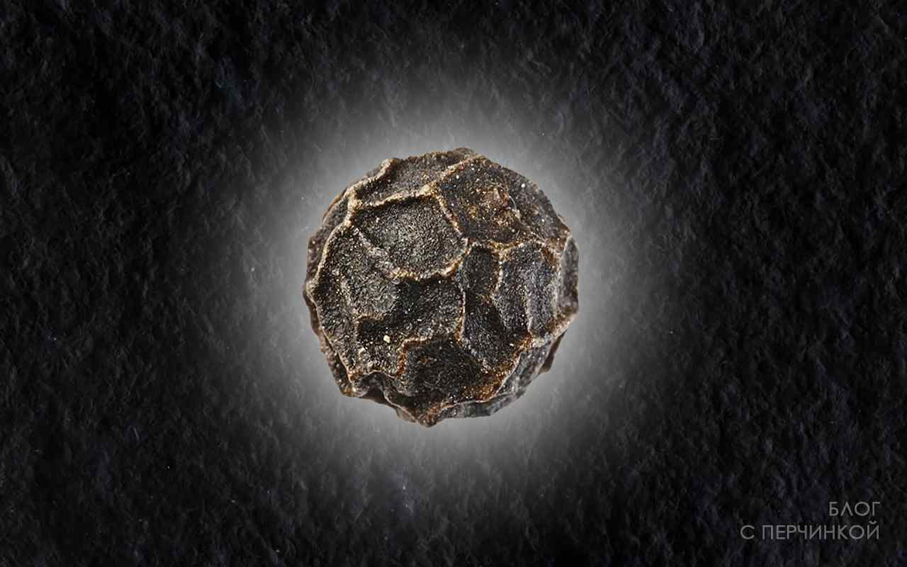

Изображение в JPG 41 кб

Изображение в WebP 42 кб

При равном размере изображения, JPG выигрывает у WEBP. Детальность прорисовки пор кожи и правый зрачок
Изображение в JPEG 56 кб
Изображение в WebP 56 кб

Однозначный победа JPEG над WEBP. Ухудшается качество свечения и темного фона изображения.
Изображение в JPG 67 кб

Изображение в WebP 67 кб
JPG выигрывает у WEBP. Детальность прорисовки "вен" на центральном цветке.
Изображение в PNG 69 кб

PNG не идет ни в какое сравнение.